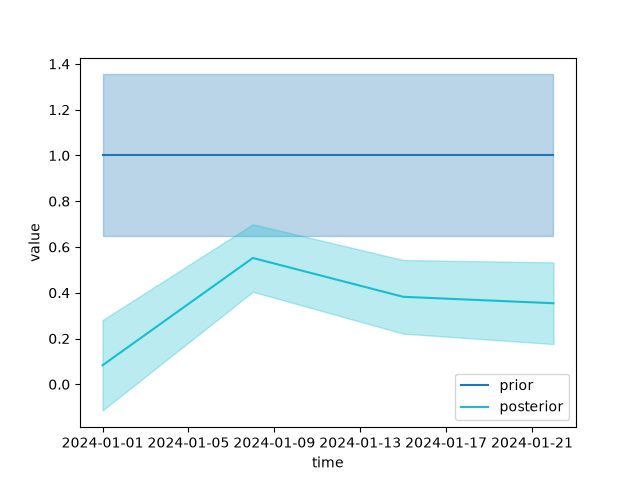

Reading the posterior#
fips.solve() solves a problem and returns a Posterior,
the answer. By default it uses the "analytic" method, the exact Gaussian
posterior of a linear problem; Choosing a method covers the others. This page
reads an analytic posterior: the estimate and its uncertainty, aggregates of
the state, draws, how much the observations tell, and the checks of the
covariances. Every method’s posterior has the same members; the
members table says which each kind of answer gives.
Solving#
A small problem: a weekly state on a 2 by 2 grid, with a prior correlated in time and space, and 15 observations.
In [1]: import numpy as np
In [2]: import pandas as pd
In [3]: import fips
In [4]: state = pd.MultiIndex.from_product(
...: [pd.date_range("2024-01-01", periods=4, freq="7D"), [40.5, 40.6], [-112.0, -111.9]],
...: names=["time", "lat", "lon"],
...: )
...:
In [5]: prior_cov = fips.Kronecker(
...: fips.Exponential("time", "14D"),
...: fips.Exponential(["lat", "lon"], 10.0, metric="haversine"),
...: ).with_std(0.5)
...:
In [6]: rng = np.random.default_rng(1)
In [7]: obs_labels = pd.MultiIndex.from_product([["conc"], range(15)], names=["block", "obs_id"])
In [8]: forward = fips.Operator.from_frame(
...: pd.DataFrame(rng.uniform(0, 1, (15, len(state))), index=obs_labels, columns=state),
...: col_block="flux",
...: )
...:
In [9]: problem = fips.Problem(
...: prior=fips.Vector.from_series(pd.Series(1.0, index=state), block="flux"),
...: prior_cov=prior_cov,
...: obs=fips.Vector.from_series(pd.Series(rng.normal(3.0, 1.0, 15), index=obs_labels)),
...: obs_cov=fips.Independent().with_std(0.7),
...: forward=forward,
...: )
...:
In [10]: post = fips.solve(problem)
fips.solve(problem, method, **options) takes the method’s name and its
options; fips.available_methods() lists the names, and an unknown method
or option raises with the names it knows. The analytic method’s one option is
gamma, the regularization factor (below).
The estimate and its uncertainty#
estimate is the posterior mean \(\hat{x}\), a
Vector on the prior’s labels. variances
is the diagonal of the posterior covariance, and post.cov() the whole
\(\hat{S}\), formed only when asked for. modeled_obs
is \(H \hat{x} + c\), and summary() puts the scalars
in one row (DOFS, chi-squared, \(R^2\), RMSE, …):
In [11]: post.estimate.to_series().head()
Out[11]:
block time lat lon
flux 2024-01-01 40.5 -112.0 0.282646
-111.9 -0.291414
40.6 -112.0 0.204229
-111.9 0.137367
2024-01-08 40.5 -112.0 0.802182
Name: estimate, dtype: float64
In [12]: post.variances.to_series().head()
Out[12]:
block time lat lon
flux 2024-01-01 40.5 -112.0 0.134190
-111.9 0.143158
40.6 -112.0 0.117721
-111.9 0.124034
2024-01-08 40.5 -112.0 0.096764
Name: variance, dtype: float64
In [13]: post.summary()
Out[13]:
gamma n_state n_obs dofs information_content chi2 reduced_chi2 r2 rmse \
0 1.0 16 15 4.35011 4.772422 26.420686 1.761379 0.522039 0.703456
uncertainty_reduction
0 0.314634
Aggregates of the state#
Most questions are about an aggregate: a monthly total, a regional mean,
the difference between two seasons. An aggregation \(W\) has one row per
aggregate (fips.aggregate.sum() and mean() build
it from the labels). With it:
W @ post.estimateis the aggregates’ estimate;post.cov(W)is their posterior covariance, \(W \hat{S} W^T\);problem.prior_cov.aggregate(W)is their prior covariance, \(W S_0 W^T\);post.averaging_kernel(W)is their averaging kernel, \(W A W^+\), with \(W^+\) the pseudo-inverse of \(W\);uncertainty()puts the prior and posterior standard deviations of each aggregate side by side, with the fraction the observations take off.
None of them forms an \(n \times n\) matrix. Here, the total of each week:
In [14]: W = fips.aggregate.sum(problem.prior.space, by="time")
In [15]: post.cov(W).to_frame().round(4)
Out[15]:
block flux
time 2024-01-01 2024-01-08 2024-01-15 2024-01-22
block time
flux 2024-01-01 0.6225 -0.0449 -0.2583 -0.2736
2024-01-08 -0.0449 0.3485 -0.1119 -0.1523
2024-01-15 -0.2583 -0.1119 0.4141 -0.0257
2024-01-22 -0.2736 -0.1523 -0.0257 0.5088
In [16]: post.uncertainty(W).round(3)
Out[16]:
prior_std posterior_std reduction lower upper
block time
flux 2024-01-01 1.416 0.789 0.443 -1.214 1.879
2024-01-08 1.416 0.590 0.583 1.051 3.365
2024-01-15 1.416 0.643 0.546 0.268 2.790
2024-01-22 1.416 0.713 0.496 0.019 2.815
In [17]: post.averaging_kernel(W).dense().diagonal().round(3)
Out[17]: array([0.488, 0.549, 0.488, 0.586])
A combination of aggregates is a row too. C @ W, with C the
weights of the rows of W, carries the covariance between the aggregates.
The change from one week to the next is not the root of the two weeks’
variances summed:
In [18]: change = fips.Operator(
....: np.array([[-1.0, 1.0, 0.0, 0.0]]),
....: fips.Space({"change": pd.Index(["week 2 - week 1"], name="what")}),
....: W.rows,
....: )
....:
In [19]: post.uncertainty(change @ W).round(3)
Out[19]:
prior_std posterior_std reduction lower upper
block what
change week 2 - week 1 1.256 1.03 0.18 -0.144 3.894
dropna=True on fips.aggregate.sum() and mean()
aggregates part of the state: labels a key cannot place are left out instead
of raising (a Series that maps only one region’s elements gives that region’s
total), and so are the blocks not named in blocks (a bias block next to
the fluxes).
Draws#
A covariance answers questions about spread; draws answer the rest. The
chance that an aggregate is below a value, or which week has the largest
total, is a function of the whole distribution.
sample() draws from the posterior, one column per draw,
labeled as the estimate is; with W it draws the aggregates. Apply the
function to each draw and read the answer off the draws:
In [20]: draws = post.sample(4000, rng=0, W=W)
In [21]: draws.shape
Out[21]: (4, 4000)
In [22]: (draws < 1.0).mean(axis=1).round(2)
Out[22]:
block time
flux 2024-01-01 0.80
2024-01-08 0.02
2024-01-15 0.21
2024-01-22 0.29
dtype: float64
In [23]: largest = draws.idxmax().map(lambda label: label[1])
In [24]: largest.value_counts(normalize=True).sort_index().round(2)
Out[24]:
2024-01-01 0.02
2024-01-08 0.64
2024-01-15 0.17
2024-01-22 0.17
Name: proportion, dtype: float64
The analytic posterior’s draws are exact: each perturbs the prior and the
observations by their errors and solves again. All the draws together cost
one product with each covariance’s square root and one with the solve’s
factors, never an \(n \times n\) matrix. The draws are a
state x draws array, so for a large state ask for them in blocks, or for
the aggregates you need.
How much the observations tell#
dofs (degrees of freedom for signal) is the trace of
the averaging kernel: the number of independent pieces of information the
observations give about the state. dofs_per_element
is its diagonal, on the state’s labels, so the share of a week, a region or a
block is a sum over its labels. information_content
is the Shannon information content, \(-\tfrac{1}{2} \ln \lvert I - A
\rvert\) in nats. DOFS counts a well-constrained direction as at most 1; the
information content keeps growing as the observations get more precise. Both
come from the solve’s factors, without forming the \(n \times n\) kernel:
In [25]: post.dofs_per_element.to_series().groupby(level="time").sum().round(3)
Out[25]:
time
2024-01-01 1.078
2024-01-08 1.033
2024-01-15 1.105
2024-01-22 1.134
Name: dofs_per_element, dtype: float64
In [26]: round(post.dofs, 3), round(post.information_content, 3)
Out[26]: (4.35, 4.772)
Gamma, other data, and the L-curve#
gamma scales the observation covariance: the solve uses \(S_z / \gamma\), so a gamma above 1 trusts the observations more and below 1 the prior more. It is 1 by default.
Another gamma or other observations need no new solve. The analytic
factors depend neither on gamma nor on the observations’ values, so
post.with_gamma(g) is fips.solve(problem, gamma=g) for the cost of a
few products, and post.with_data(obs) is the posterior of other
observations at the same labels (a bootstrap, or synthetic data). The rows of summary() stack:
In [27]: pd.concat([post.with_gamma(g).summary() for g in (0.25, 1.0, 4.0)], ignore_index=True)
Out[27]:
gamma n_state n_obs dofs information_content chi2 reduced_chi2 r2 rmse \
0 0.25 16 15 2.256343 2.553364 12.424450 0.828297 0.082316 0.888671
1 1.00 16 15 4.350110 4.772422 26.420686 1.761379 0.522039 0.703456
2 4.00 16 15 7.290068 8.784718 58.434926 3.895662 0.727697 0.522095
uncertainty_reduction
0 0.217130
1 0.314634
2 0.446752
An L-curve plots the two terms of chi2 against
each other over a sweep of gamma. data_misfit is how
far the modeled observations are from the observations, \(r^T S_z^{-1}
r\), on \(S_z\) as given (so it compares across gammas).
state_misfit is how far the estimate is from the
prior, \((\hat{x} - x_0)^T S_0^{-1} (\hat{x} - x_0)\). As gamma grows the
first falls and the second rises; the corner of the curve (Hansen, 1992) is
the gamma past which fitting the observations more closely costs much more
departure from the prior:
In [28]: sweep = [post.with_gamma(g) for g in np.logspace(-2, 2, 9)]
In [29]: pd.DataFrame(
....: [(p.options.gamma, p.data_misfit, p.state_misfit) for p in sweep],
....: columns=["gamma", "data_misfit", "state_misfit"],
....: ).round(3)
....:
Out[29]:
gamma data_misfit state_misfit
0 0.010 170.712 2.169
1 0.032 55.737 4.073
2 0.100 30.637 5.352
3 0.316 22.691 6.799
4 1.000 15.148 11.272
5 3.162 9.232 21.898
6 10.000 5.471 43.522
7 31.623 2.760 92.468
8 100.000 1.223 178.034
To choose gamma, or any other covariance setting, from the data instead, see Fitting the covariance settings.
Checking the covariances#
The posterior is only as right as the covariances. Four checks:
reduced_chi2is near 1 when the covariances fit the observations.chi2_tests()makes that a test, with degrees of freedom and a p-value (Rodgers, 2000, chapter 12), and tests three more vectors against their own covariances. A small p-value says the vector is larger than its covariance allows; one near 1, smaller.desroziers()compares the observation error variances the residuals diagnose with those the solve used, per observation or averaged over groups.leverage()says which observations weigh most on a state element.
The four rows of chi2_tests are the innovation \(z - H x_0 - c\) (the
test of chi2, with \(m\) degrees of freedom), the
residual \(z - H \hat{x} - c\) (also \(m\)), the modeled increment
\(H (\hat{x} - x_0)\), and the increment \(\hat{x} - x_0\) (each with
as many degrees of freedom as there are directions of the state the
observations constrain). When the estimate is linear in the observations, as
it is here, the residual’s test gives the innovation’s numbers and the
modeled increment’s gives the increment’s; they differ for a method whose
estimate is not ("bounded", "gauss_newton"). Here the state has more
elements than the 15 observations, which constrain 15 directions of it, so all
four rows are the same:
In [30]: post.chi2_tests().round(3)
Out[30]:
chi2 dof reduced_chi2 p_value
test
innovation 26.421 15 1.761 0.034
residual 26.421 15 1.761 0.034
modeled_increment 26.421 15 1.761 0.034
increment 26.421 15 1.761 0.034
log_evidence, the log probability of the observations
given the covariances, is the measure to maximize when fitting them:
Fitting the covariance settings.
What each group of observations adds#
Data worth asks how much an aggregate’s uncertainty depends on each group
of observations (a site, a platform, a month). data_worth()
groups the observations by any of their levels, as
desroziers() does, and gives for each group:
std_withandstd_without: the aggregate’s standard deviation with all the observations, and without this group;reduction: the fraction this group takes off, on top of the others;dofs: its share of DOFS;std_aloneandreduction_alone: the standard deviation with this group’s observations only, and the fraction that takes off the prior.
The two readings differ when groups see the same part of the state: a site that adds little on top of the others may have taught a lot had it been the only one. They agree only when there is one group. The alone columns use the group’s own block of the observation covariance, so they leave out its correlation with other groups’ errors. Each is a rank update of \(\hat{S}\) or \(S_0\), exact, with no problem solved again.
A problem with two sites, and the worth of each to the total:
In [31]: hours = pd.date_range("2024-01-01", periods=48, freq="h")
In [32]: labels = pd.MultiIndex.from_product([["A", "B"], hours], names=["site", "obs_time"])
In [33]: ch4 = fips.Vector.from_series(pd.Series(rng.normal(2.0, 0.1, 96), index=labels), block="ch4")
In [34]: flux = fips.Vector.from_series(pd.Series(1.0, index=pd.Index(["c0", "c1", "c2"], name="cell")), block="flux")
In [35]: hourly = fips.Problem(
....: prior=flux,
....: prior_cov=fips.Independent().with_std(0.5),
....: obs=ch4,
....: obs_cov=fips.Independent().with_std(0.05),
....: forward=fips.Operator(rng.uniform(0, 0.1, (96, 3)), ch4.space, flux.space),
....: )
....:
In [36]: hourly_post = fips.solve(hourly)
In [37]: total = fips.aggregate.sum(hourly.prior.space, by=pd.Series("all", index=hourly.prior.space.select("flux"), name="region"))
In [38]: hourly_post.data_worth(by="site", W=total).round(3)
Out[38]:
n_obs dofs std_without std_with reduction std_alone reduction_alone
site block region
A flux all 48 1.353 0.134 0.095 0.291 0.134 0.845
B flux all 48 1.376 0.134 0.095 0.293 0.134 0.845
Candidate observations (a site or platform you might add) are their rows
of the forward operator and the covariance of their errors, with no values.
candidate_worth() adds each group on its own and gives
the same columns except the alone ones, so “which candidate helps the total
most” is one call:
In [39]: new_sites = fips.Space({"ch4": pd.MultiIndex.from_product([["C", "D"], hours], names=["site", "obs_time"])})
In [40]: H_new = fips.Operator(rng.uniform(0, 0.1, (96, 3)), new_sites, flux.space)
In [41]: hourly_post.candidate_worth(H_new, fips.Independent().with_std(0.05), by="site", W=total).round(3)
Out[41]:
n_obs dofs std_without std_with reduction
site block region
C flux all 48 1.062 0.095 0.077 0.189
D flux all 48 1.006 0.095 0.078 0.181
The data worth needs an estimate linear in the observations: the analytic method gives it, and the members table says which others do.
Plotting#
fips draws one plot, plot_comparison() (the viz
extra): several vectors or Series on one axes, with a band of one standard
deviation from each covariance, and an optional truth. Draw maps and anything
else from to_series() and to_xarray()
with pandas, xarray or matplotlib:
In [42]: from fips.visualization import plot_comparison
In [43]: weekly = fips.aggregate.mean(problem.prior.space, by="time")
In [44]: fig, ax = plot_comparison(
....: (weekly @ problem.prior).to_series().droplevel("block").rename("prior"),
....: (weekly @ post.estimate).to_series().droplevel("block").rename("posterior"),
....: errors=[problem.prior_cov.aggregate(weekly), post.cov(weekly)],
....: )
....:


Repeated inversions, logging and saving#
An inversion run many times (one a month, a sweep over settings) is a
function in your own code that builds the Problem from your
settings, then fips.solve():
import pandas as pd
import fips
def build_problem(config) -> fips.Problem:
"""Load the observations and the prior, build H and the covariances."""
...
rows = [fips.solve(build_problem(config)).summary() for config in configs]
table = pd.concat(rows, ignore_index=True)
fips’s warnings show as Python warnings; the rest of its log is silent
until you configure logging. Several methods warn about things that change
how far the answer can be trusted (a covariance close to singular, a prior
wide against its bounds, draws that mix slowly, iterations that converge
slowly). Each is a FipsWarning, which Python prints once for
each line of your code that leads to it, so you see it without setting
anything up. warnings.filterwarnings() chooses what happens to them;
in a loop of inversions, for example, make them errors so that no answer
that drew one goes into the table unnoticed:
import warnings
warnings.filterwarnings("error", category=fips.FipsWarning) # or "ignore", "always"
fips also logs each warning, and what each solve did, through the standard
logging module, under the fips logger (the solve under
fips.methods), with a NullHandler, as a library should.
Configure logging to keep them with the rest of your program’s log:
import logging
logging.basicConfig(level=logging.WARNING) # logging.INFO shows each solve's steps too
A problem and a posterior pickle with the standard library
(pickle.dump(post, file)). A posterior keeps its problem, its options and
what the method kept from the solve, and rebuilds every output when it is
read.
How the analytic solve works#
The analytic method factors one matrix, in one of two forms that give the same posterior:
The whitened form works in the observations’ size. It whitens with the Cholesky factor of \(S_z\) (so \(S_z\) must be positive definite) and factors the \(m \times m\) matrix \(H S_0 H^T\) in that metric. It computes \(H S_0\) in the forms of \(H\) and \(S_0\) (through the factors of a Kronecker covariance), and the estimate, the variances, DOFS and chi-squared from the factors, forming nothing \(n \times n\).
The information form works in the state’s size. It factors an \(n \times n\) matrix built from \(H\), a square root of \(S_0\) and \(S_z^{-1}\), and forms no \(m \times m\) matrix of its own.
fips takes the information form when there are fewer state elements than
observations and \(S_z\) is dense, diagonal, sparse, block diagonal or
Kronecker; otherwise the whitened form. In both, post.cov(), the gain and
the averaging kernel are formed only when read, once each.
fips.solve() factors that matrix by Cholesky at its gamma, the
cheapest way to solve at one gamma. The first post.with_gamma takes its
eigendecomposition instead, which serves every gamma, and keeps it: a sweep
over gamma pays for one eigendecomposition.
References#
Hansen, P. C. (1992). Analysis of discrete ill-posed problems by means of the L-curve. SIAM Review, 34(4), 561-580.
Rodgers, C. D. (2000). Inverse Methods for Atmospheric Sounding: Theory and Practice. World Scientific.